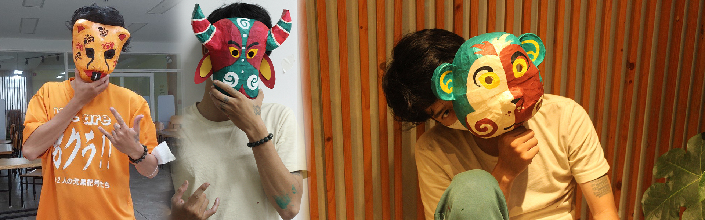

Mặt nạ Cáo Hoa có ý nghĩa phong phú và đa dạng, tùy theo văn hóa và quan niệm của mỗi người. Trong nhiều nền văn hóa, con cáo được coi là một biểu tượng của sự khôn ngoan, mưu mẹo, nhanh nhẹn, và may mắn. Trong một số nền văn hóa khác, con cáo cũng được liên kết với sự quyến rũ, gợi cảm, và bí ẩn. Mặt nạ hình Cáo Hoa có thể giúp người đeo thể hiện được những phẩm chất này, hoặc chỉ đơn giản là để vui chơi và giải trí
Mặt nạ Sói "Art" có ý nghĩa phong phú và đa dạng, tùy theo văn hóa và quan niệm của mỗi người. Trong nhiều nền văn hóa, con sói được coi là một biểu tượng của sự bảo vệ, trung thành, và tập thể. Trong một số nền văn hóa khác, con sói cũng được liên kết với sự dũng cảm, mạnh mẽ, và tự do. Mặt nạ hình Sói nghệ thuật có thể giúp người đeo thể hiện được những phẩm chất này, hoặc chỉ đơn giản là để vui chơi và giải trí
Mặt nạ Cọp có ý nghĩa phong phú và đa dạng, tùy theo văn hóa và quan niệm của mỗi người. Trong nhiều nền văn hóa, con cọp được coi là một biểu tượng của sự mạnh mẽ, dũng cảm, và bảo vệ. Trong một số nền văn hóa khác, con cọp cũng được liên kết với sự may mắn, giàu có, và quyền lực. Mặt nạ cọp có thể giúp người đeo thể hiện được những phẩm chất này, hoặc chỉ đơn giản là để vui chơi và giải trí.
Mặt nạ Mão có thiết kế sáng tạo và độc đáo, tạo nên một hình ảnh huyền bí và linh thiêng. Mặt nạ có thể được làm bằng nhiều chất liệu khác nhau, như giấy, vải, đất sét, hay thiếc. Mặt nạ cũng có thể được vẽ theo nhiều phong cách khác nhau, từ cổ điển đến hiện đại, từ truyền thống đến sáng tạo.
Mặt nạ Sửu có ý nghĩa phong phú và đa dạng, tùy theo văn hóa và quan niệm của mỗi người. Trong nhiều nền văn hóa, con trâu được coi là một biểu tượng của sự siêng năng, chịu khó, và trung thành. Trong một số nền văn hóa khác, con trâu cũng được liên kết với sự may mắn, giàu có, và quyền lực. Mặt nạ Sửu có thể giúp người đeo thể hiện được những phẩm chất này, hoặc chỉ đơn giản là để vui chơi và giải trí
Mặt nạ Khỉ có ý nghĩa phong phú và đa dạng, tùy theo văn hóa và quan niệm của mỗi người. Trong nhiều nền văn hóa, con khỉ được coi là một biểu tượng của sự khôn ngoan, mưu mẹo, và may mắn. Trong một số nền văn hóa khác, con khỉ cũng được liên kết với sự quyến rũ, gợi cảm, và bí ẩn. Mặt nạ Khỉ có thể giúp người đeo thể hiện được những phẩm chất này, hoặc chỉ đơn giản là để vui chơi và giải trí
Mặt nạ tuồng có hình dáng sinh động và giàu biểu cảm, thể hiện được tính cách và sự nhân cách hóa của các nhân vật hoặc linh vật trong văn hóa tín ngưỡng dân gian. Mặt nạ tuồng có thể được trang trí thêm các chi tiết như mắt, mũi, miệng, tai, hoặc mũ hình tháp. Mặt nạ tuồng cũng có thể được biểu diễn theo nhiều cách khác nhau, như gầm gừ, cười toe toét, hay nhăn mày.
Mặt nạ giấy bồi lễ hội có hình dáng sinh động và giàu biểu cảm, thể hiện được tính cách và sự nhân cách hóa của các nhân vật hoặc linh vật trong văn hóa tín ngưỡng dân gian.
Mặt nạ giấy bồi kiểu cổ điển có hình dáng sinh động và giàu biểu cảm, thể hiện được tính cách và sự nhân cách hóa của các nhân vật hoặc linh vật trong văn hóa tín ngưỡng dân gian. Mặt nạ có thể được trang trí thêm các chi tiết như mắt, mũi, miệng, tai.
Mặt nạ giấy bồi Ngộ Không có hình dáng sinh động và giàu biểu cảm, thể hiện được tính cách và sự năng động của Tôn Ngộ Không. Mặt nạ có thể được trang trí thêm các chi tiết như mắt, mũi, miệng, tai, hoặc vòng cổ hình vạn. Mặt nạ cũng có thể được biểu diễn theo nhiều cách khác nhau, như gầm gừ, cười toe toét, hay nhăn mày.
Mặt nạ tuồng có thiết kế độc đáo và sáng tạo, tạo nên một hình ảnh huyền bí và linh thiêng. Mặt nạ tuồng có thể được làm bằng nhiều chất liệu khác nhau, như giấy, vải, đất sét, hay thiếc. Mặt nạ tuồng cũng có thể được vẽ theo nhiều phong cách khác nhau, từ cổ điển đến hiện đại, từ truyền thống đến sáng tạo.
Việc gìn giữ và kế thừa nghề làm mặt nạ giấy bồi là một việc rất quan trọng và ý nghĩa, bởi nghề này không chỉ là một loại hình nghệ thuật truyền thống, mà còn là một phần của văn hóa dân gian Việt Nam. Mặt nạ giấy bồi là món đồ chơi từng rất được yêu thích, nhất là mỗi dịp Trung thu, nhưng hiện nay đã dần bị lãng quên bởi nhiều loại đồ chơi hiện đại khác. Do đó, việc giữ gìn và phát huy nghề làm mặt nạ giấy bồi cần được động viên và khích lệ kịp thời
Theo các bài báo mà tôi tìm thấy, hiện nay ở Hà Nội còn một vài nghệ nhân làm mặt nạ giấy bồi, như Bác Bùi Quý Phong ở Chùa Cầu Hội An . Bác đã gìn giữ nghề truyền thống của ông cha để lại hơn 40 năm qua, và đã sáng tạo ra nhiều mẫu mã khác nhau, từ mặt Tễu, Tôn Ngộ Không, đến các con vật, linh vật trong văn hóa dân gian. Họ cũng đã truyền dạy nghề cho con cháu và những người có đam mê, mong muốn nghề làm mặt nạ giấy bồi không bị mai một
Chúng tôi rất ngưỡng mộ và kính trọng những nghệ nhân làm mặt nạ giấy bồi, bởi họ đã góp phần gìn giữ nghề truyền thống và làm phong phú thêm kho tàng văn hóa dân tộc Việt Nam. Chúng tôi hy vọng rằng sau sự kiện "Triển Lãm Mặt Nạ" này thì nghề làm mặt nạ giấy bồi sẽ được nhiều người biết đến và yêu thích, và sẽ được truyền lại cho các thế hệ sau.
.jpg)
.jpg)